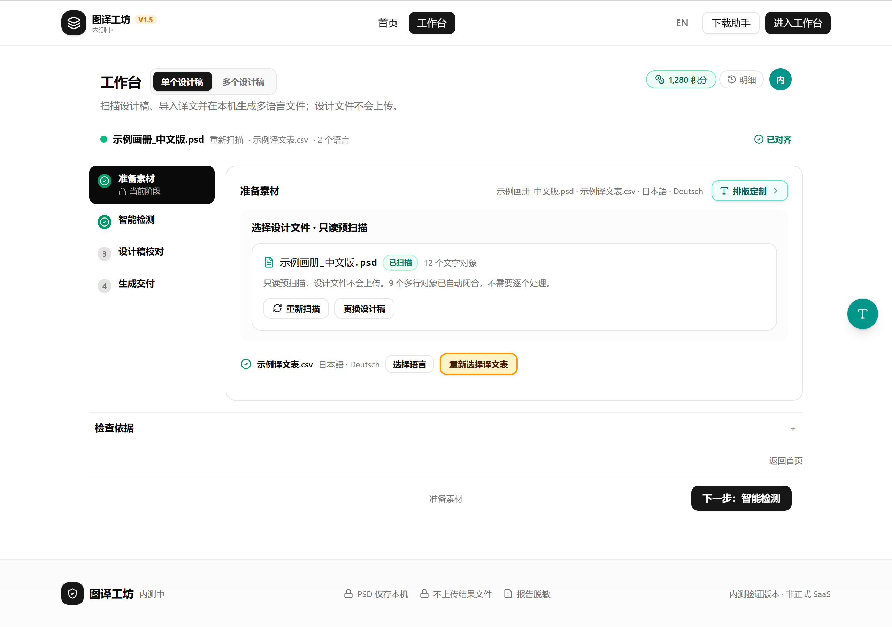
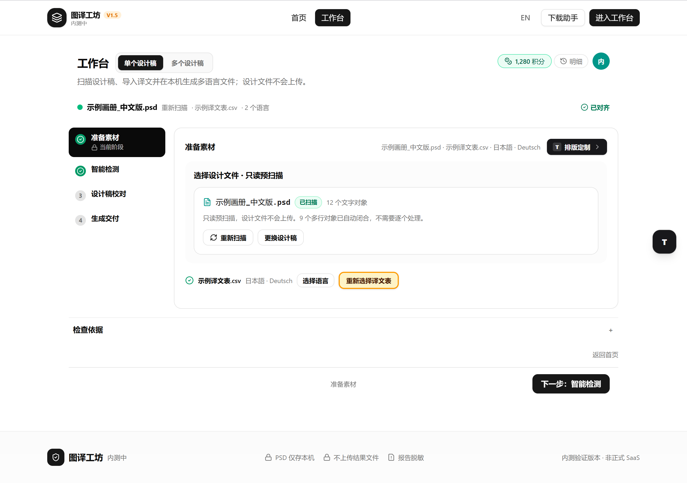
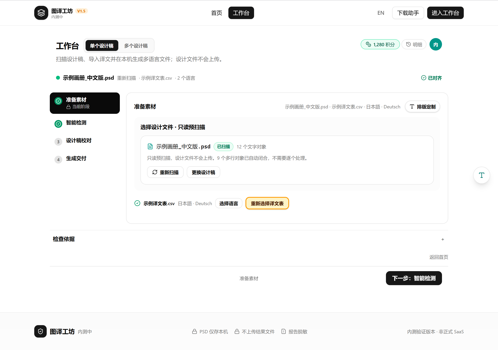
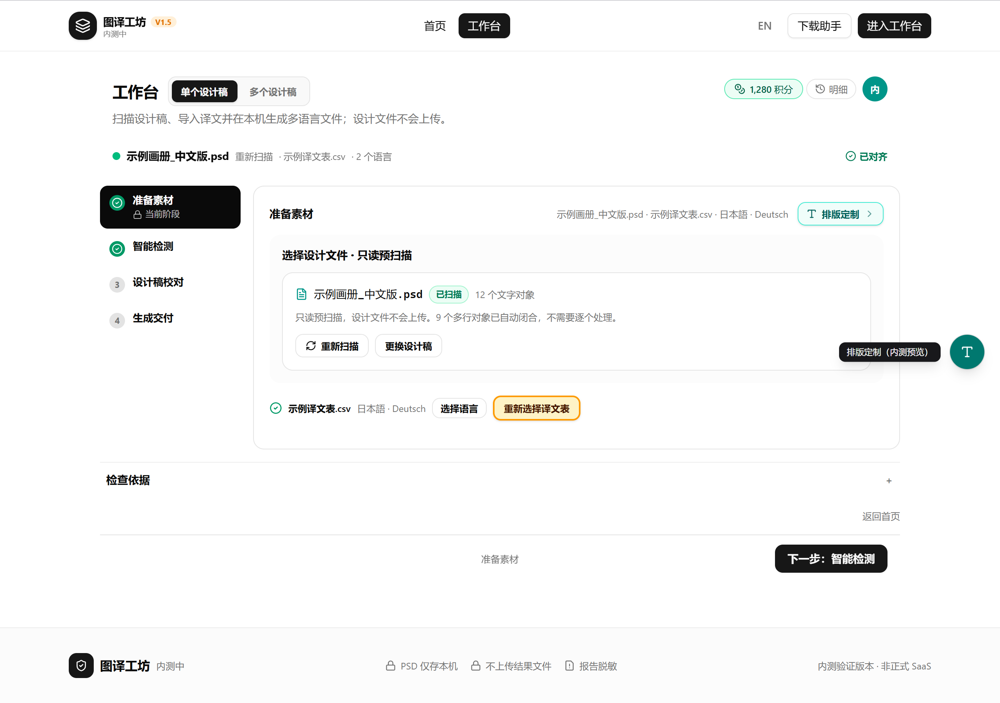
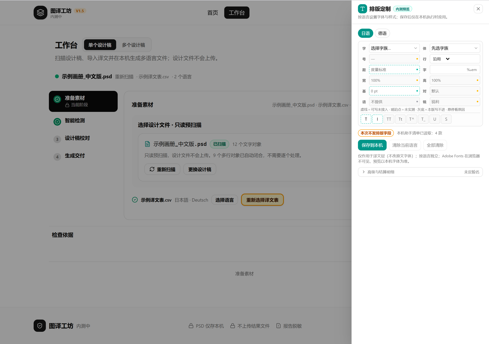
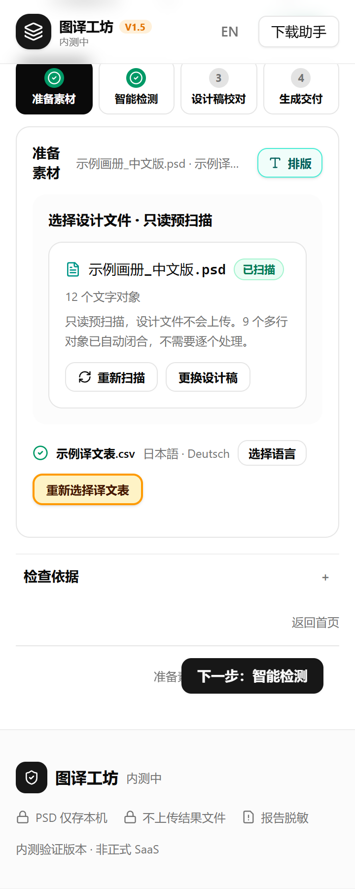
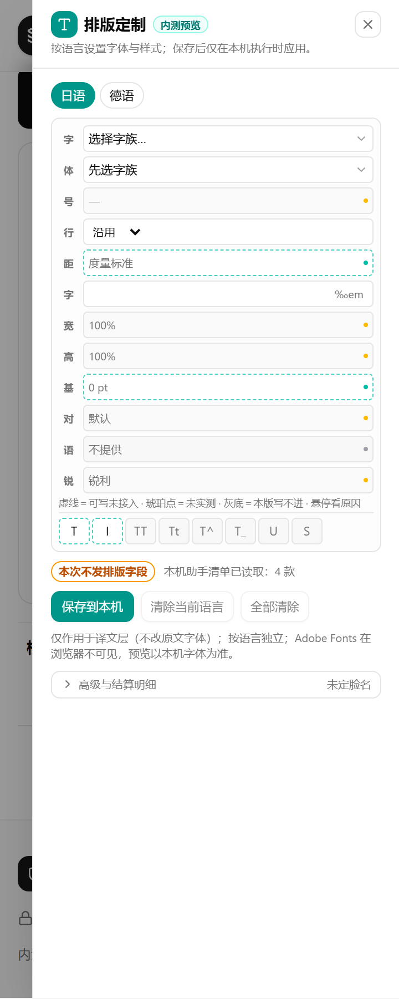
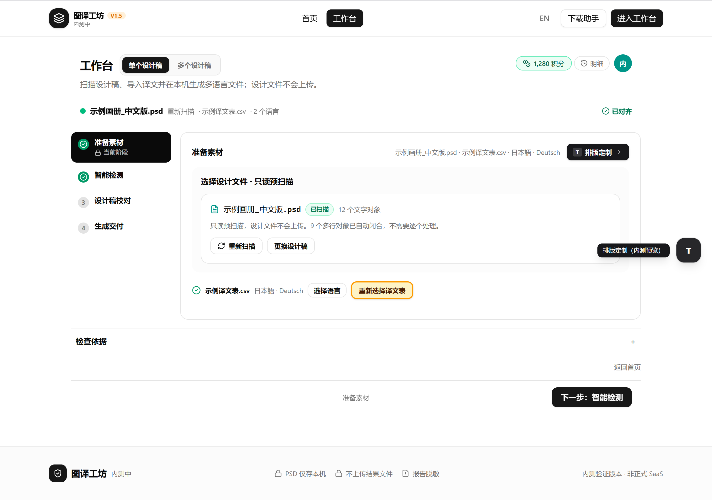
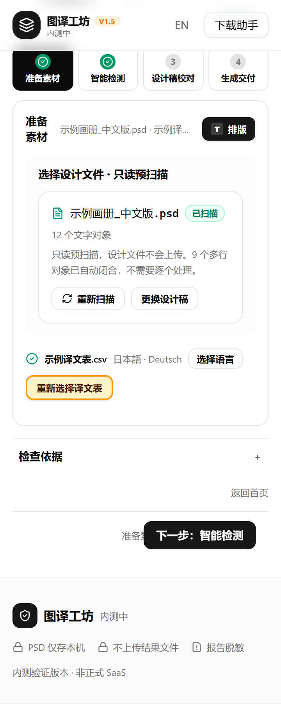
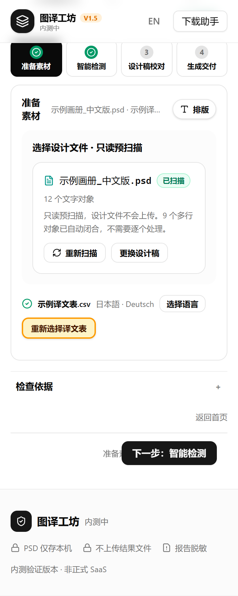

这套入口怎么工作
三条规则固定，皮肤只换颜色与形状；桌面与窄屏的取舍也在这里写死。
桌面 ≥ 1280
卡头按钮 + 悬浮球同时出现。按钮在「Photoshop 就绪检查」卡头右上角；球固定在右侧中部，44×44， 滚动后卡头离开视口，球仍可用。
窄屏 < 1280
只留卡头按钮，球收起。单列内容没有右侧留白，球会压住卡片；卡头按钮就在入口原处， 窄屏文案缩成「排版」。
抽屉
桌面 360px，窄屏 92vw，满高。球和按钮共用同一个抽屉；打开时球隐藏，Esc 关闭， 焦点回到刚才点的按钮或球；背景 inert，未保存草稿保留。
三套皮肤，一眼对比
1280 桌面、同一状态（未展开抽屉）下的真实渲染。点开大图可看细节。

浅青底、青绿描边，球为青绿实心。

黑色实心按钮，与工作台主按钮同族。

白底细描边，球为白色圆形。
同族青
入口读作“内测工具”，与抽屉标题里的青色图标、内测徽标连成一套。浅青底保证在白卡上有边界， 又不至于像主操作那样抢视线；球用青绿实心，远看仍能被注意到。




为什么推荐它
青色在产品里已经代表“可选工具/内测能力”，用户不会把它误读成下一个流程步骤；对比度足够，入口不隐身。
代价
比黑色主按钮弱一档。如果这个入口承担拉新/推广任务，B 更合适；如果只是内测者的顺手工具，A 足够。
原生碳
把入口当成工作台的原生主按钮：黑色实心、白色 T 字标、圆角方形球。它和“下一步：执行与报告”“进入工作台”同一视觉族， 存在感最强，也最容易被一眼发现。



适合
希望用户第一次就注意到排版能力；或后续把入口作为内测转化位来运营。
代价
卡头黑色按钮会和文件选择、语言选择争主操作；在「准备素材」阶段，入口显得比任务本身更重。
轻量纸片
白色圆角纸片、细描边、白底球。目标是“不打断准备素材”，把入口降到工具级；但在白色卡片与白色页面背景上， 边界主要靠一圈 1px 描边和浅阴影，远看容易消失。


适合
入口已经通过别处（例如引导、公告）被用户知道，这里只想保留一个安静的回头路。
代价
首次发现成本最高；在低对比显示器或亮环境下，按钮与球都可能被忽略。
实测读数与边界
以下数字来自本轮 Playwright 自动检查，不是估算。
1280 桌面
卡头按钮 110 × 30；球 44 × 44；阶段宽 828px、高 338px（1280×900 视口内完整可见）；球不压阶段内容、不压底部主栏； 抽屉宽 360px。
360 窄屏
卡头按钮可见；抽屉宽 331px（92vw）；字体控件宽 ≥ 110px；文档与抽屉均无横向溢出； 球不渲染。
交互
抽屉带 role=dialog / aria-modal，焦点进入并限制在抽屉内，Esc 关闭后回到触发件； 关闭再开保留未保存草稿。
这是模拟稿，不是已上线入口
本页截图来自独立模拟台，是真实渲染。产品里的排版面板已经挂在「准备素材」阶段，但目前仍是内联展开；
卡头按钮、悬浮球、抽屉这套入口和埋点尚未接到产品。三种皮肤共用同一套结构与行为，只换视觉。
你定下哪套后，再把它接到产品「准备素材」阶段的卡头，并继续受 featureAccess.typographyCustomization 灰度门控制。